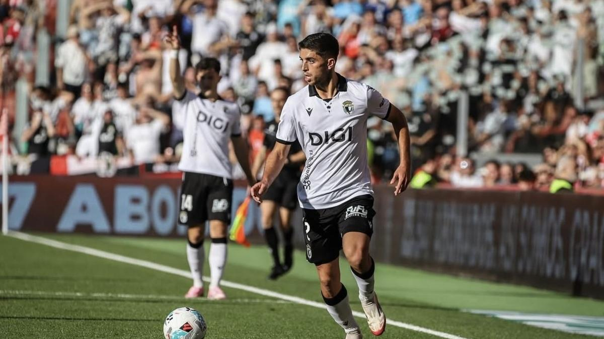

El lateral del Burgos, recién recuperado de su lesión, analiza la derrota ante el Almería y asegura que el equipo llega con confianza al duelo del lunes ante el Granada.
Álex Lizancos vuelve a estar disponible para el Burgos CF y afronta con especial ilusión el próximo partido ante el Granada. El lateral del equipo blanquinegro, natural de la ciudad nazarí, compareció este jueves ante los medios de comunicación en la previa del encuentro del lunes en El Plantío, donde espera volver a disfrutar de minutos después de superar la lesión de menisco que le mantuvo apartado durante varias semanas.
El jugador reconoció sentirse “muy bien y contento” después de volver a competir, aunque todavía con el recuerdo de la derrota frente al Almería. Lizancos reapareció precisamente en el último encuentro, disputando 27 minutos, y ahora espera tener protagonismo en un partido que será especial por su condición de granadino.
“Va a ser un partido muy especial porque soy granadino y es el partido en el que voy a debutar en El Plantío esta temporada después de la lesión”, explicó. El lateral también quiso agradecer el apoyo recibido por parte de la afición durante su ausencia y aseguró que intentará aprovechar los minutos que tenga.
La lesión llegó en un momento en el que Lizancos se encontraba en un buen momento de forma. El jugador explicó que aquel contratiempo fue “un golpe duro”, aunque también considera que le sirvió para afrontar el proceso de recuperación de otra manera. Volver a trabajar con el grupo supuso para él recuperar una parte de la rutina que había perdido durante su ausencia.
Un equipo con más competencia
Lizancos también valoró los cambios que ha experimentado la plantilla durante el verano. Para el defensa, el Burgos cuenta esta temporada con más alternativas y una mayor competencia por los puestos.
“Creo que este año tenemos más fondo de armario. Los cambios nos están aportando mucho y hay que valorar esa competencia porque significa que hay más competitividad y eso favorece al equipo”, señaló.
El lateral también explicó que el actual cuerpo técnico trabaja de una manera diferente al de la pasada temporada. A su juicio, el equipo cuenta ahora con más libertad sobre el terreno de juego, aunque quiso dejar claro que se trata simplemente de una forma diferente de trabajar.
"Más que enfocarme en el Granada, quiero enfocarme en nosotros. Creo que estamos a un gran nivel y venimos compitiendo bien”, afirmó. "Da igual cómo venga el Granada a Burgos, dependeremos de nosotros mismos", explicó el lateral del equipo castellano.
La derrota en Almería no cambia el objetivo
El Burgos llega al encuentro después de perder en Almería, una derrota que puso fin a una racha de tres victorias consecutivas. Sin embargo, Lizancos considera que el equipo puede extraer aspectos positivos de aquel partido, especialmente después de haber conseguido ponerse por delante durante buena parte del encuentro ante uno de los equipos más fuertes de la categoría. “Creo que salimos reforzados”, aseguró el jugador.
Con el Granada como próximo rival y dos partidos consecutivos en El Plantío, Lizancos ve una oportunidad para sumar puntos ante su afición. El lateral destacó la importancia del apoyo de la grada y señaló que el equipo tiene la posibilidad de conseguir seis puntos en estos dos encuentros como local. Lizancos considera que la plantilla está preparada para luchar por objetivos importantes, aunque evita hablar todavia del posible playoff. “Creo que la plantilla está hecha y preparada para competir por lo máximo. Hay que ir poco a poco, porque esta liga es muy larga y competida como para estar hablando ya de play-off o no play-off, pero creo que la palabra que nos define este año es ambición. Vamos a ir a por todo y ya el tiempo dirá dónde tenemos que estar”, afirmó.
El jugador también apuntó a una de las claves que, en su opinión, debe tener el Burgos esta temporada: mantener la solidez defensiva mostrada el pasado curso y añadir más recursos en ataque. “Todos tenemos que dar un extra y vamos a intentar sumar lo máximo posible”, concluyó.